Social Media Tools
Video with Instructions to follow:
How to install:
In order to get whatsapp on your device you need go to the App Store or Play Store and search for it in the search bar. Then you click on the app icon and on the right-hand side there should be a little cloud if it's iPhone or a bar saving "download". You click on that and the app will be installed.
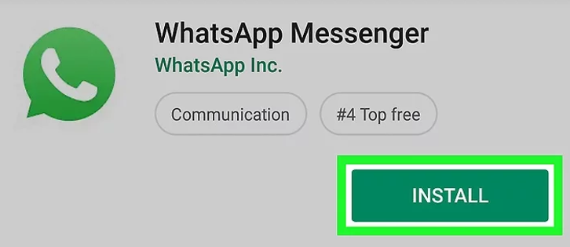How to register:
Once you download the app the app will guide you through registration itself. You will be asked to confirm your country code and enter your phone number. After that you will have to verify your phone number. You will receive a message with a code which you then put into the app to clarify your phone number. Then you will be asked to add your name and a profile photo which is optional.
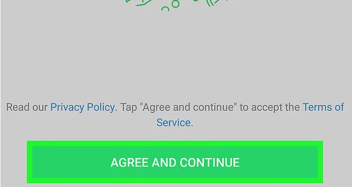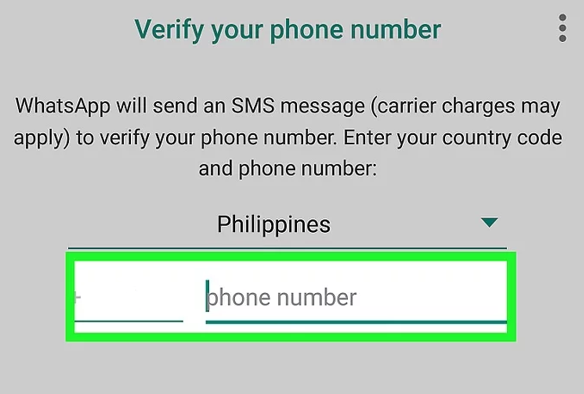
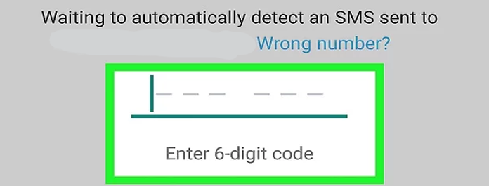
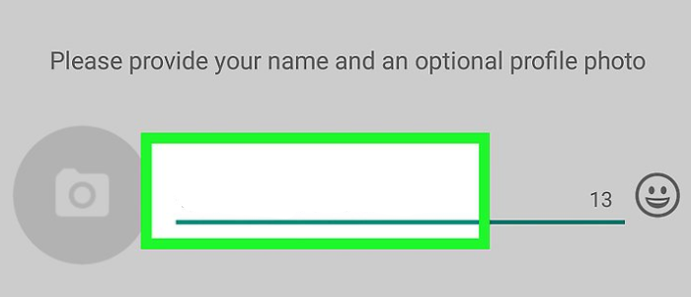
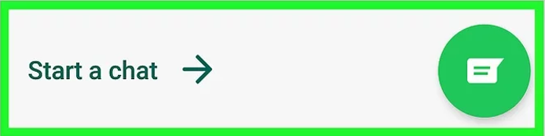
How to use (step 1)
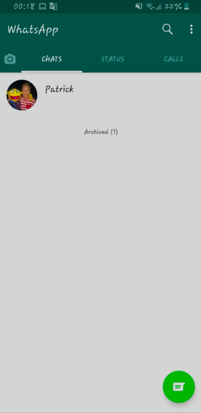Open what’s app on your mobile device and you will see the main chat page. This is where you keep track of all messages, calls and status changes. Along the top row you have the search tab so you can look for recent or not so recent messages. Beside the search tab is the settings with three dots. This is used to open a new group chat, all your favourite or (starred) messages and out to change your account settings along with themes, wallpaper and how you receive notifications. On the bottom right corner is the message tab where you select the contact you wish to write to and begin messaging, it is that easy.
How to use (step 2)
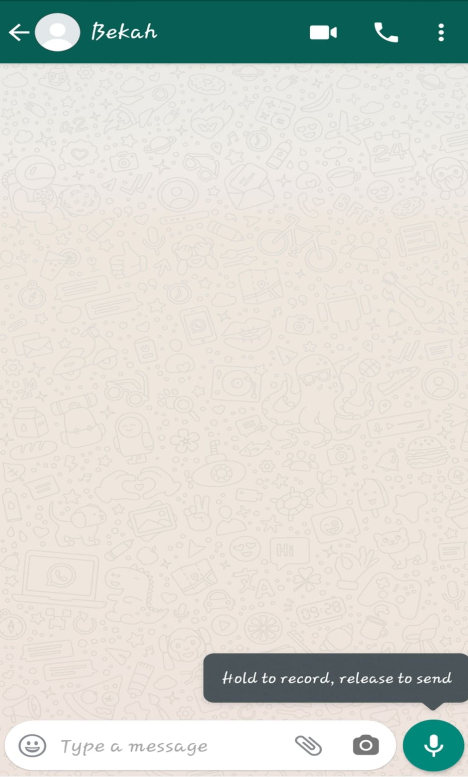Once you click the green message icon on the bottom right and choose the contact you wish to use, you are taken to this screen where you type the message you want to write and hit enter. If this is too slow for you or you prefer to talk you can use the record setting on the bottom right icon instead. Holding this button and speaking will record anything you say and once released it will send the voice message. In the top right corner you have 3 icons, these are video call, phone call, and contact settings for this specific contact which you will see below.
How to use (step 3 and 4)
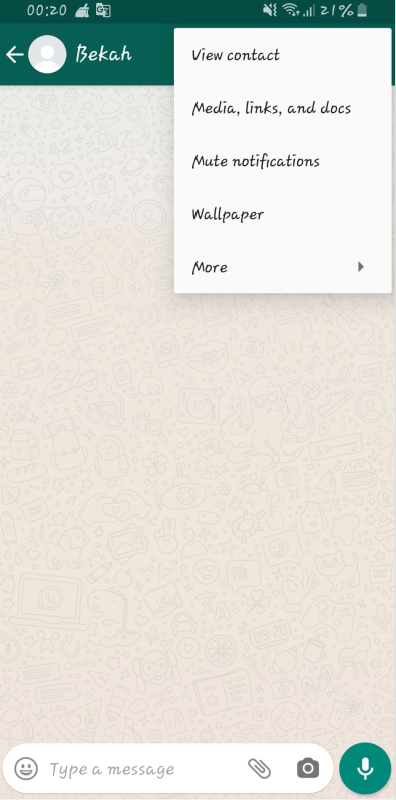 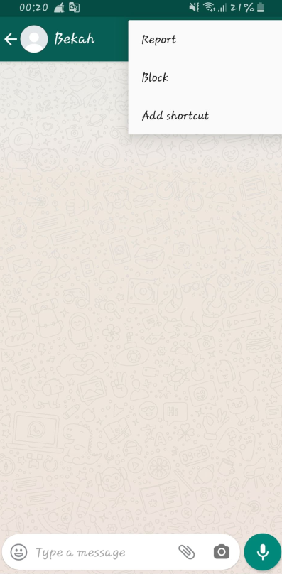If you press the three dot settings icon on the top right corner while in any specific chat with a contact you are taken to a menu. This is where you can view the contacts details, send them images or documents, turn off the notifications for that person, change the wallpaper for that chat to give it a more personalised look. If you want to report a contact to what’s app services or even block the contact from messaging you again, Just press the three dots on the top right hand side while in chat with the specific contact you wish to report/block then press the “more” tab.
How to use (step 5)
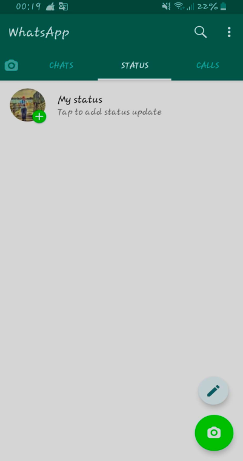The Status option allows you to share text, photo, video and GIF updates that disappear after 24 hours, similar to snapchat. In order to send and receive status updates to and from your contacts, you must have each other's phone numbers saved in your phones' address books. To update this is easy. Just click the status tab and tap the my status title beside your profile photo.
How to use (step 6)
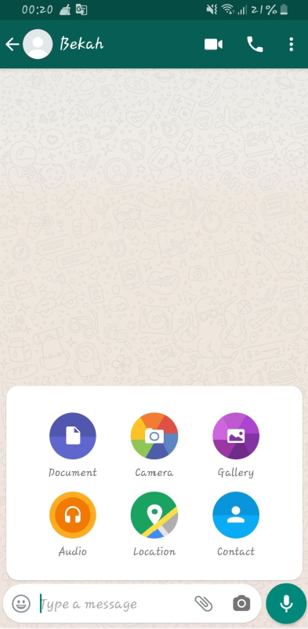Adding documents allows you to send photos, files, maps and even other contact information to a chosen contact. To do this just open a chat with a contact and in the bottom right there is a paperclip icon that you press to show more options. Just tap which ever icon you wish to send and it will send whatever you wish the contact to see.
How to use (step 7)
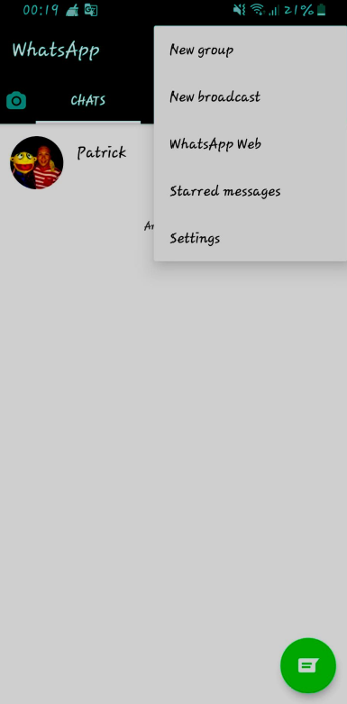 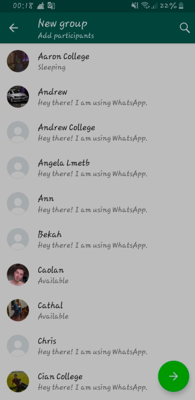 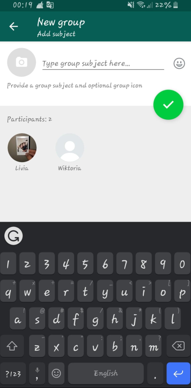If you want to add a group with as many contacts as you want, simply tap the settings icon (three dots on the top right hand side) then tap the first icon which says “New group”. Once you do this you will be taken into your contact list where you select all the people you want in your group and select the green arrow. Once you do this you can type the name of the group and also an Icon to represent that group. You can add emoticons via the smiling face emoji beside the subject. Once you are done, select the green icon with the tick and you’re all set up for the group chat.
Cautions and warnings
Age Limit
In May 2018, WhatsApp established that: ▫ If you live in any country within the European Union, you must be a least 16 years old or greater to register on WhatsApp. ▫ If you live in any country outside the European Union, the minimum age required to register on WhatsApp is 13 years old. If a person isn’t old enough to have authority to agree to WhatsApp Terms in his/hers country, the parents or the guardian must agree to the Terms on the minor’s behalf.If you create an account with false information or on behalf of someone who is underage you will be violating WhatsApp’s Terms and by doing that WhatsApp may disable or suspend your account,, and if they do, you must not create another account without their permission.
Warnings of how to be mis-used
“Beginning on December 7, 2019, WhatsApp will take legal action against those we determine are engaged in or assisting others in abuse that violates our Terms of Service, such as automated or bulk messaging, or non-personal use, even if that determination is based on information solely available to us off our platform. For example, off-platform information includes public claims from companies about their ability to use WhatsApp in ways that violate our Terms.” - 4th paragraph on https://faq.whatsapp.com/en/android/26000259/
Privacy and Security
WhatsApp’s privacy setting gives the user the option to show his/hers profile photo, status, if the person saw the message or not (by showing the two blue ticks) and the last time the user was online. To have access to change all of that, you simply need to: enter WhatsApp → Settings → Account → Privacy. ▫ Your Account Information: Once you register on WhatsApp you will provide them your phone number and basic information (such as your name). You will also be providing them phone numbers from your mobile address book. You may also provide your email, profile picture and “about information”. ▫ Your Messages: WhatsApp do not retain the user’s messages, once the message (audios, videos, photos, chats...) are delivered, they are deleted from the server and it is only stored on your on device. If a message is not delivered (if you are offline for example), WhatsApp may keep it for up to 30 days to try to deliver it. If the message is still undelivered after 30 days, then it will be deleted. WhatsApp offers “end-to-end encryption” which means that the user’s messages are encrypted to protect against the app and third parties from reading them. It can only be read by you and the person who you are communicating with. It isn’t possible to turn off the end-to-end encryption, which means it is always activated. ▫ Two-Step Verification: Two-step verification is a feature that adds more security to the user’s account. When this option is enabled, any attempt to verify the user’s WhatsApp must be followed by a 6 digit PINcreated by the user. To enable this option you will need to: enter WhatsApp → Settings → Account → Two-step verification → Enable. ▫ WhatsApp will share your information if: “(a) respond pursuant to applicable law or regulations, to legal process, or to government requests; (b) enforce our Terms and any other applicable terms and policies, including for investigations of potential violations; (c) detect, investigate, prevent, and address fraud and other illegal activity, security, or technical issues; or (d) protect the rights, property, and safety of our users, WhatsApp, the Facebook Companies, or others, including to prevent death or imminent bodily harm.” - Under “Law and Protection” on https://www.whatsapp.com/legal/#terms-of-service
Abuse
If you don’t want to have any further contact with a person through WhatsApp it offers you the option of blocking the person, in this way they won’t be able to send you further messages. To be able to do that, you need to: enter WhatsApp → Settings → Account → Privacy → Blocked Contacts. When you receive a message from someone you don’t know for the first time, you will have the option to report the number. You can report a contact or a group from the chat or from their profile. To do it you need to: open the chat → Tap the profile → Scroll to the bottom → Click on “report contact” or “report group”. Once you have reported, WhatsApp will receive the most recent messages sent to you by reported user/group., as well as your recent interaction with the reported user.
Use for education
WhatsApp comes into play very handy when passing notes to classmates if you missed any important information.
Especially in a third level education it gives certain people a chance to text their friends and know where to catch up.
If you wanted to contact only certain people in your course you can set up a group. Set up study groups and timetables.
Now that technology is a big part of our lives especially in the life’s of younger people (students) teachers should take advantage of this.
Being able to directly talk to students, send lecture notes and pass on any important data would in fact bring ideas not only for the students but to get feedback in how the work can be presented making it simpler for the teacher.
It is estimated that about 1 billion people use WhatsApp with 300 million daily users and 5 million for education; the permission to use WhatsApp in all forms of education would bring these numbers up.